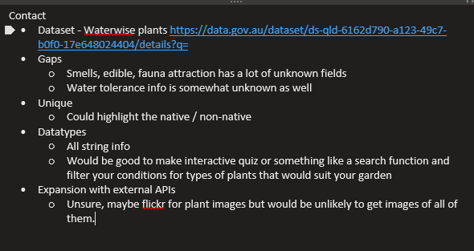
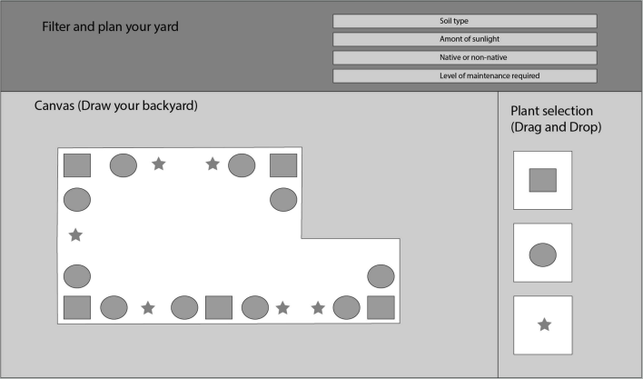
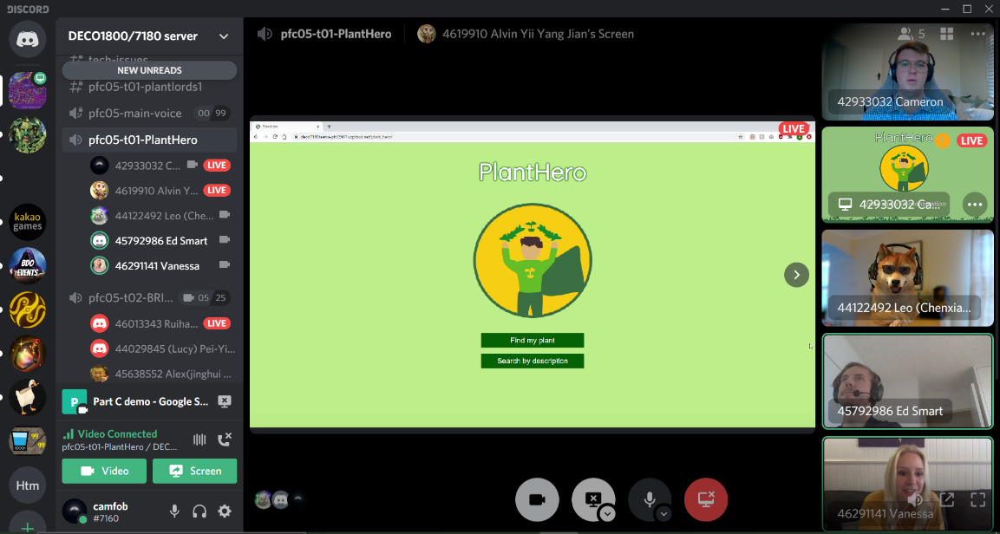
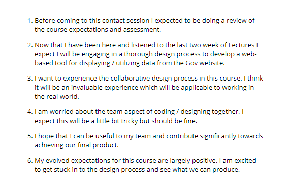

Hi and welcome to my portfolio. My name is Cameron and I am currently completing a Master’s degree in information technology, set to graduate at the end of 2021.
My current career goals are to complete my degree and become a software developer or business analyst at a tech company.
The best way to contact me is via email at cameron.edgerton@uq.net.au.
PlantHero is a web-tool that makes waterwise gardening simple and accessible for every Australian. It features an interactive search function which allows users to enter their unique environmental conditions and provides a list of suitable waterwise plants. It also allows users to enter the name of a plant to find out if it is waterwise, as well as produce a list of waterwise plants according to a particular characteristic.
For the poster and pitch assessment I was predominantly focussed on finding a dataset that had legitimate uses. During the week 3 contact session I found the waterwise plants dataset on data.gov.au and realised immediately that it had a lot of practical uses.
The idea I pitched was a garden planning tool which allowed the user to create a bird’s-eye view of their backyard into which they could drag and drop a variety of waterwise plants. The aim was for users to be able to easily create a sustainable, waterwise garden without requiring horticultural knowledge or the use of a landscaper.
The feedback I received for the poster and pitch was limited but it was incredibly positive which set me up confidently for the incoming group work part of the course.
- - - - - - -
My team’s idea for our website spawned directly from the waterwise plants dataset I pitched initially and was a simplified version of the garden planning application I proposed. We started developing the concept of PlantHero to allow users to input a variety of environmental conditions unique to them and provide them with a list of suitable waterwise plants.
Immediately the team was passionate about the idea and we worked incredibly well together to create a report and presentation.
I was appointed lead of documentation within my team but also took on an unofficial project management role alongside the delegated project manager in order to ensure the team were meeting deadlines. This involved participating in weekly discord meetings with my team and making sure each team member was on the same page when it came to overall concept and individual deliverables.
As documentation lead, I was largely responsible for producing the report for Part A of our assessment. I wrote the scope of the report and the ‘research and inspiration’ section. I was also responsible for collating and proofreading the sections completed by my other team members to ensure the language and ideas flowed well throughout the report.
My team had a few individuals who learned English as a second language and were not comfortable with their written English, so I spent a considerable amount of time rewriting their sections of the report as well.
I was also involved in the pitch, providing structure and direction to the ideas we were presenting.
Overall, I think Part A was a success. The feedback we received from our peers was largely positive and we as a team were eager to start building the website.
The only improvement I would have made was with respect to time management. Not all team members provided me with their report sections within the agreed-upon timeframe which meant that there was not enough time for the design lead to produce an aesthetically appealing report. If I were to do the assessment again, I would have checked up with my team a bit more frequently as we approached the deadline in order to ensure everyone was on track to meet their deliverables on time.
- - - - - - -
During the process of building the demo we established the MVP we wanted to produce. We initially started implementing all dataset interactions using JavaScript, however, soon determined it would be a lot easier to use PHP because we were having issues storing and accessing the API call variables. As a result, we decided to integrate the CodeIgniter framework and reconstructed the website with a PHP implementation which made variable storing and accessing a lot simpler.
With respect to the demo, I was hands on at all stages. I assisted with drafting a user testing plan which we used to gather feedback from users prior to presenting the demo. As a result of the feedback, we decided to narrow our scope and remove the ‘plant type’ prompt from the demo we presented as well as the final product because it over-complicated the website and negatively impacted the user experience.
I also assisted with the merge to a PHP implementation by creating the PHP pages and reformatting the image sources on activity buttons to suit the CodeIgniter integration.
With respect to the presentation, I drafted the slides which included determining our objectives, success criteria and feedback questions, as well as detailing our user testing approach and changes to the implementation.
Our MVP demonstration was a success in my eyes. We were able to produce a demo with an operational API call and no simulated elements which was something a lot of the other teams were not able to achieve in time. The only suggestion we received in terms of improving the website was to gamify the ‘find my plant’ function which we disagreed with on the basis that it detracted from the concept. As a result, we opted not to go ahead with that suggestion.
Ultimately, the only improvement to the demonstration I could think of was using better images for the buttons instead of placeholder images. The images we used were not the ones we intended to implement in the final implementation and some of the feedback we received was that the image selection / styling was not aesthetically pleasing. Other than that, I was really happy with our demo and knew we were on track to produce a good final product.
- - - - - - -
To produce the final product and report, we split into two main teams: design/documentation and code. As a team we agreed that the majority of our resources should be expended on getting the final implementation finished, so we agreed that the three coding team members would focus solely on that.
I designed and drafted the majority of the final report. One team member made a contribution to the ‘design process’ section and another drafted the ‘technical implementation’ section once the coding team had finished building the back-end of the final product.
Once the report was finished, I assisted the coding team with final CSS styling changes, testing and implementing responsive design, creating new image assets to replace some of the demo assets, and adding back buttons on the search results pages to enhance the user experience.
Once we had completed our final round of user testing and implemented changes from the feedback, we had a meeting to arrange the tradeshow presentation. For the tradeshow, I was the main presenter.

I believe the project as a whole was definitely a success and the final product that we produced truly surpassed my expectations. I think we worked extremely well as a team and each of us had some key strengths which we utilised well.
I was really happy with the report. The aesthetic design tied perfectly to the theme of our website and I believe the content of the report detailed our design process extremely well. As stated previously, I produced the majority of the final report alone, however, I wouldn’t really change that approach towards it. We, as a team, determined the website build was our top priority and I was more than happy to let the other team members focus on that while I produced a report which I knew they could rely on me to do well.
The actual implementation was also a success in my eyes. We realised that our MVP scope was a bit too broad towards the end and were unable to implement a Wikipedia API call to get more information and images for each of the results in the results page. If we were able to implement this on time, I think the website would have turned out even better. Regardless of being unable to achieve our MVP, I believe we succeeded in producing a unique website which solves a real-world problem in a fun and interactive way. If I was to do it again, I probably would have liked to have been more involved in the process of creating the API call. I haven’t had much experience with JavaScript or PHP so that was something I was looking forward to experiencing which I feel like I missed out on.
The tradeshow was also successful in my opinion. I think we delivered a great pitch and demonstration of the final product and the markers expressed that they were really impressed with what we had produced. One of the markers commented that he would use it in his personal life which was a huge compliment.
My intention for this portfolio was to present a logical flow detailing the progression of my project from concept inception to final implementation. I feel my use of journals and taking regular screenshots throughout the process has enabled me to produce a well-rounded portfolio. I have implemented HTML, CSS and JavaScript to create a visually appealing website to host my portfolio.
If I were to recreate the portfolio I would implement some responsive design so that it is more mobile-friendly.
The following is my first journal outlining the expectations I had for the course:

I believe I met all of these expectations. I definitely feel like I was able to experience the collaborative design process and I really enjoyed it. Being able to brainstorm ideas with other people has been a really positive experience for me and I am glad I was able to have it.
I predicted I would have issues trying to code collaboratively but I did not have as many issues as expected. My team utilised the online functionality of Visual Studio Code so we had no issues writing code concurrently.
The main way I felt my expectations were not met was the course organisation. I expected a well-structured course with clear assessment requirements and I believe I did not experience that. I felt like the course staff did not always communicate assessment requirements explicitly enough and it caused a lot of frustration for a large number of students that I have talked to. As such, my experience with the course suffered.
The two main things I learned throughout the course were how to use APIs and the basics of PHP. Both of these are concepts I had never touched before so I was really interested in learning about them. I definitely feel like we just scraped the surface regarding these concepts, so I am looking to take up some courses next semester which tackle them in a bit more depth.
Honestly, I don’t think there is much I would change about my approach to the course or the assessment. I was really happy with my own / my team’s organisation and I think we delivered a high-quality website which we all really liked. We communicated well and kept each other accountable and that’s all I can ask of my teammates.
In terms of improving my experience from an institutional point of view, I have a number of suggestions that should be acknowledged and implemented by the course coordinator: